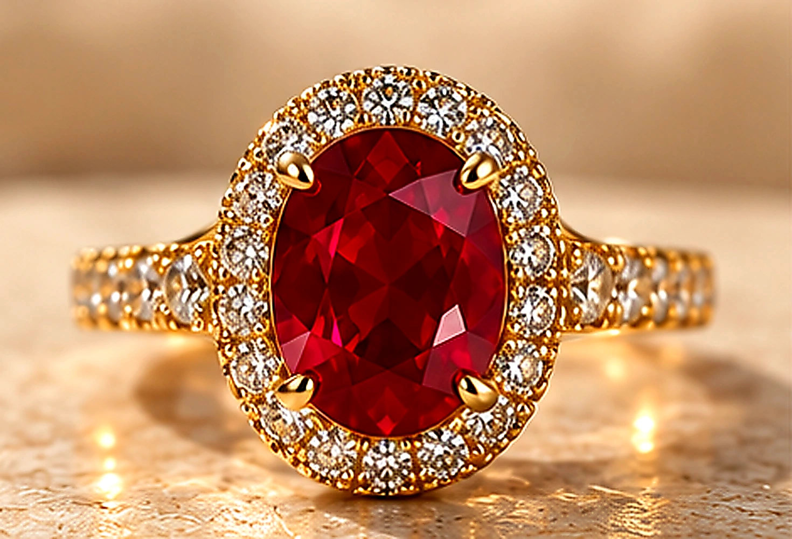
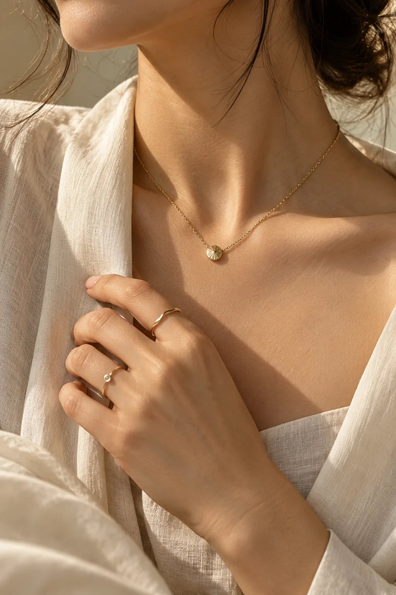
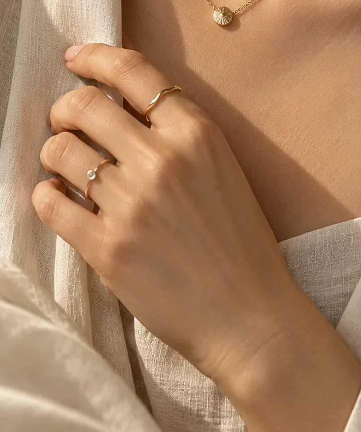
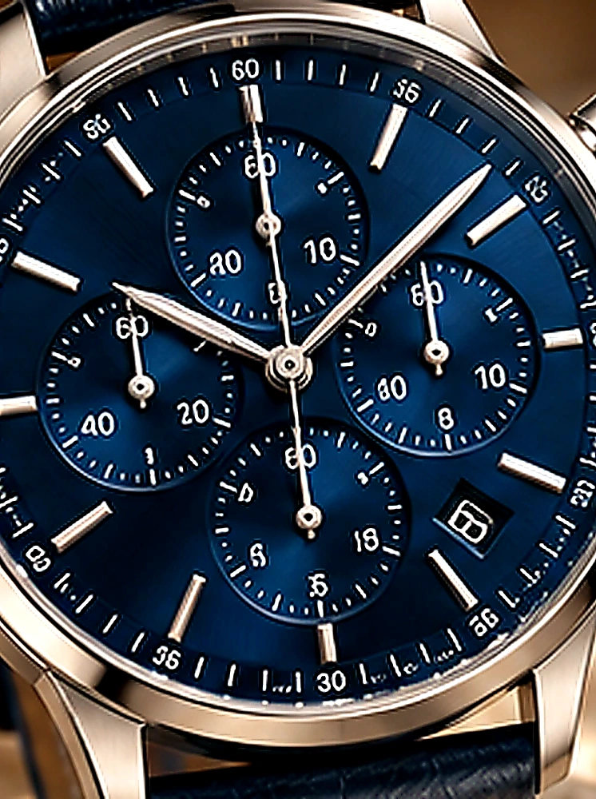
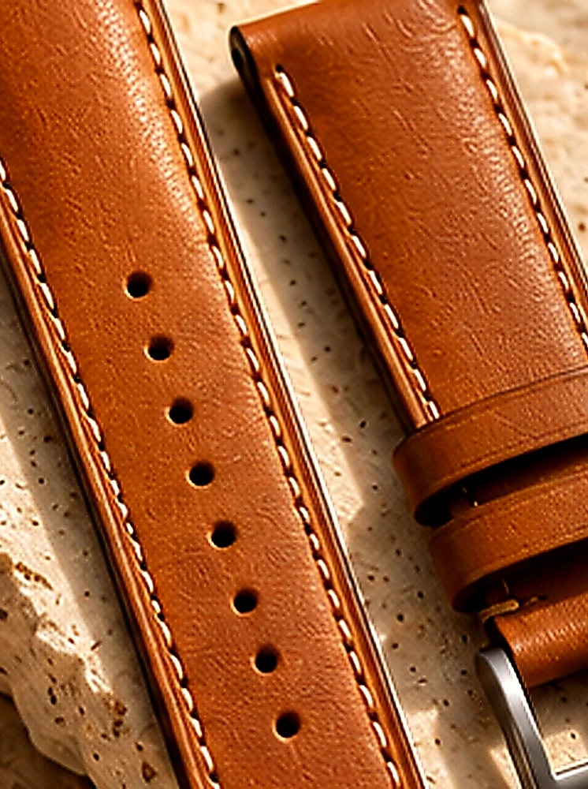
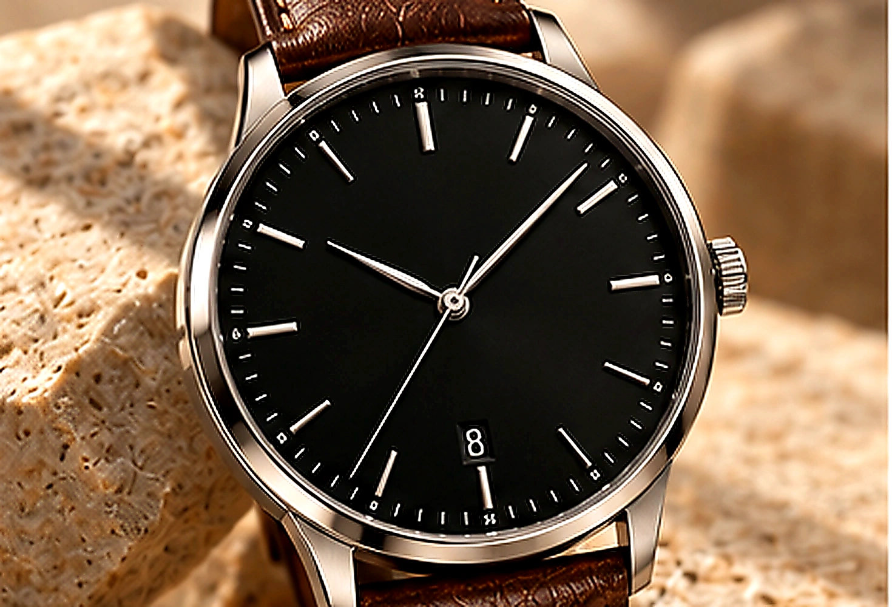
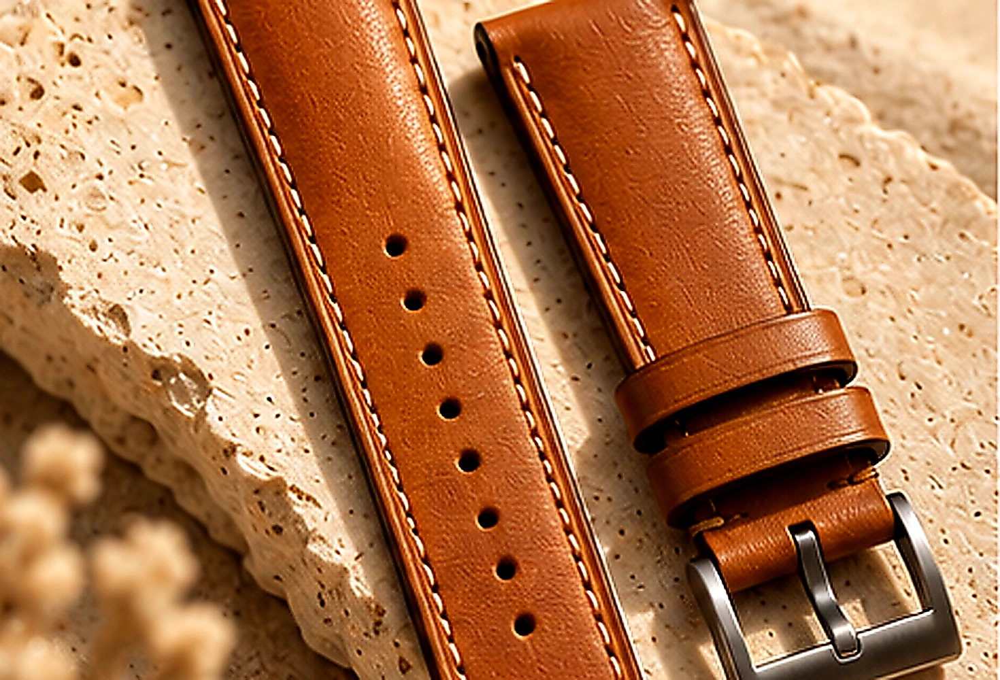

DESIGNER RINGS
Ruby Halo
A vivid red centre stone framed by a delicate halo.
VIEW DETAILS ↗Designer rings, bespoke watches and leather straps. Find the details that make a piece feel like yours.
EXPLORE THE COLLECTIONSome pieces become everyday favourites. Others mark a moment you never forget. The best ones feel right every time you wear them.


Three collections, each with its own character. Explore what speaks to you.



The setting, the dial, the stitch. Look closer at the details that give each piece its character.
From the shape of a setting to the last stitch in a leather strap, the smallest details reward a closer look.
DISCOVER THE ATELIER ↗ FORM / MATERIAL / FINISHSmall details. Careful choices. The kind of finishing you appreciate more each time you wear a piece.

A vivid red centre stone framed by a delicate halo.
VIEW DETAILS ↗
A black dial and a warm brown leather strap.
VIEW DETAILS ↗
Warm leather, neat stitching and a simple buckle.
VIEW DETAILS ↗